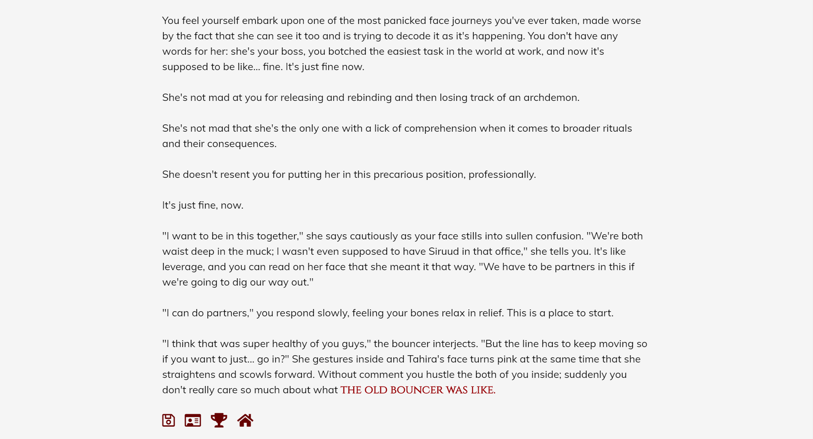
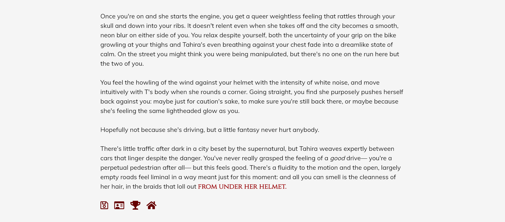
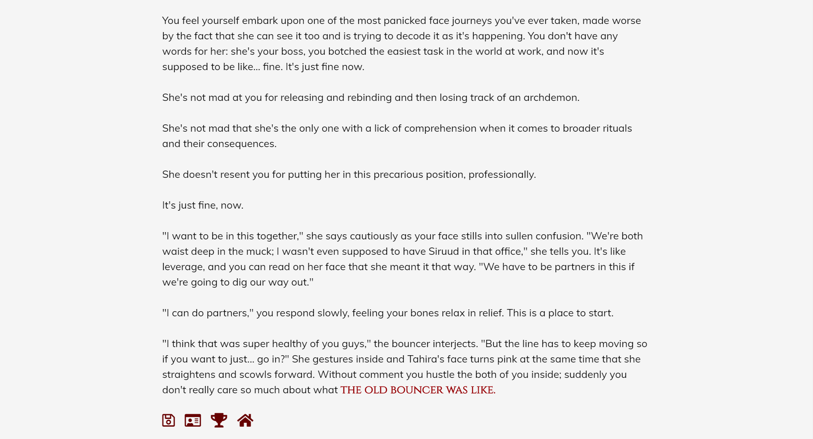
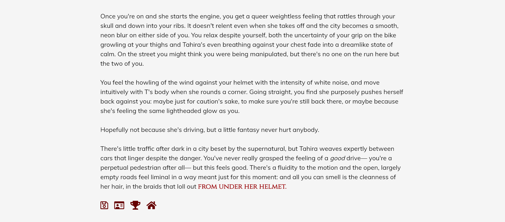

Marti Toonen (b. 1995) has a BA Honours in Professional Writing (Book Stream) from York University, and a degree in Enterprise Web & Mobile Development from triOS College (London Campus).
I'm an indie game developer who is passionate about interactive storytelling, and the challenge of telling a story in collaboration with a player. Being the only developer on several independent projects has honed my skills in narrative design, coding, sound editing, and very quietly seething as not to disturb those around me.
My hobbies include cooking, loving dogs, and changing the font on my website like I'm trying to set a record.
Game Development Projects
Lovestruck
I'm a writer for the Voltage app Lovestruck, having written Milo Starlash in the Enchanted Nights short story and worked on an internal prototype.
I take a plot document and story bible, and use them to create scripts on a two week turnaround. I take edits from production and implement them, frequently in a day or less.
Bad Ritual
Bad Ritual is a text adventure game built with Twine Harlowe (including CSS, HTML, and Javascript).
Play as a street agent whose job is to wrangle the Infernal— various species of supernatural creatures that prowl the streets of Sanctum City— for the prestigious SignetWorks corporation. You have no love for your job, as a minimum wage hazard worker: still, your immediate supervisor, Tahira, is supportive and money is money, until one night when you're called back into the office to babysit an ancient demonic artifact.
Things go terribly wrong and you end the night bound to an ancient archdemon called Siruud the Devourer. Now you're faced with a choice: Siruud wants you to help him find out why he was brought to SignetWorks, while Tahira wants your help to contain a potentially violent threat to Sanctum City.
In a city where everyone has a secret, you have to decide how you want to unbind yourself from Siruud, but watch out: SignetWorks is always watching.
 



Manor Hill
Manor Hill is a partial visual novel built with Ren'py (including Python).
You're a community staple of your native Uresa, and every year you attend the Harvest Festival held in the manor on the hill. Every other year you've gotten a little tipsy and headed home, but this year is a little different. The party is packed with the elite from all over the continent, but while you get swept up in the party, something insidious is happening behind the scenes.
After a violent disruption to the festival, you wake up alongside one of the partygoers: Abeni, the Commander of the Fleet; Valerian, a mob boss from a nighbouring country; or Gnarl, your best friend and local con artist. You quickly realise that not only have the party guests disappeared and left you totally alone, but there's no way out. You're trapped in the manor on the hill, and either no one on the outside knows or cares.
Get to the bottom of why you were locked away, and find a way out. Can you trust your partner? And if you can't, what hope do you have?

Hybrid
Hybrid is a text adventure game built with Twine Harlowe (including CSS, HTML, and Javascript).
Civilization has crumbled, but not in the way that anyone expected. The earth rose up, and in an impossible act of rapid evolution, destroyed the monuments of human society. This, however, doesn't affect you at all: your name is Zed, and you've lived in this fractured world your whole life. You and your last remaining family member have a farm, a home, and even a radio tower. You've never seen another person, but you hardly need to.
When your farm is ravaged by strange-looking scavengers, with your family nowhere to be found, you'll be forced to set out into the wild to find them. On the way, you'll stumble upon an outpost with even stranger strangers, and be confronted by a question that you've never had to consider before.
How far are you willing to go to preserve humanity?


Web Development Projects
Kepler Shipyards
Made in thirty-five hours, this website was created to finish up an internship obligation. Using resources provided by the company, I reformatted and designed their entire website using HTML and CSS. I made use of free to use assets and images in order to provide placeholders for future development.